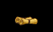
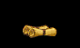
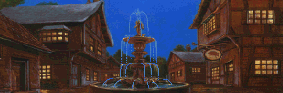
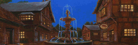

The Spyglass and the Spider
the Leader of the Nighthawks.
| Betrayal at Krondor - Chapter 3 The Spyglass and the Spider |
|
|
||
|
Gorath, James & Owyn must find, and kill the Leader of the Nighthawks. | ||||
|
[HOME]
| ||||
| In this Chapter you must follow a tenuous thread of clues, which finally point towards Kenting Rush in the North. There you will find the Leader of the Nighthaws, but in order to kill him you must first unmask him. Before you head North, there's a small side-quest you can perform: the Guild War Quest, which will provide you with a series of clues. | ||||
| WALKTHROUGH Chapter 3 |
The first thing you can do in this Chapter is to end the Guild War. You will pick
up some clues on the way, but make sure you don't finish this Quest until you've
utilized the high prices at the Romney Shop. Once the Guild War is ended, the prices
will revert back to normal.
In Romney talk to the boy Jason at the Inn. Next talk to Duke Romney in
the house to the left, and accept to bring his message to Arlie Steelsoul.
Arlie lives in a house south of Sloop (the one with the KEEP OUT! signposts). Stick to
the Main Road, and don't enter Sloop for the time being. You will be ambushed
by 2 Nighthawks [Combat 30] near Romney, and 3 Nighthawks
[Combat 29] near Sloop.
There are two ways of approaching Arlie's House. If you stick to the Road you will meet Podrich,
Arlie's servant, who will ask you if you've brought Arlie's food. Ignore him. Note the empty
Chest in Arlie's cornfield. If you can obtain Poisoned Rations (or poison some using Coltari
Poison), and place them in the Chest, they will get picked up after 24 hours. Arlie will now
admit you. Alternatively, if you avoid the Road, you can enter Arlie's house from the back, but
you'll have to navigate an devious Trap.
You will be attacked by three Nighthawks just south of Arlie's, but otherwise you shouldn't
run in to any new Enemies on the way to Silden.
A guest in the Silden Tavern will tell you that the Upright Man has been killed.
This might tempt you to return to Krondor. You should be able to do so without running
into any new Enemies, unless you decide to re-visit the Aal Oracle, in which case you
will certainly come across two Pantathian Sorcerers [Combat 31].
Beware! They can cast some nasty Spells.
Once in Krondor, you can now enter the Palace directly. Talk to Katala. Also, note that it is
now possible to TELEPORT from the Shrine of Astalon. Have a chat with Limm in the Sewers. He
won't allow you to explore the Sewers, but will offer information about the Crawler
and the Upright Man's death. He will also give you as many Virtue Keys as you want, sell you
an Amulet of the Upright Man for 300 Gold Sovereigns, and, for a fee of 120 Gold, improve your
Stealth by 10 points (15 if Selected).
At this stage you will probably want to retrace your path towards Romney, in order to pick
up your reward from the Duke, and get on with the Main Quest of this Chapter. By now you
should have picked up enough clues in order to realize that you should be heading North
from Romney, towards Prank's Stone, Cavall Keep and Kenting Rush [Zone 4]. If, however, you
are eager to explore, there are numerous new Combats waiting to be fought in Zones
1 and 2 (North of Krondor), Zone 7 (Dimwood), and Zone 5 (Highcastle/Northwarden). Refer to
this Chapter's SPECIAL PAGE for a complete listing.
Exit Zone 3 North of Romney, and enter Zone 4 (Prank's Stone Sector). You will be greeted
by 3 Nighthawks [Combat 08]. The Trap South of the Bridge is
quite simple - James can navigate it alone. North of the Bridge four Rogues
[Combat 05] want to know whose side you're on. If you don't want to fight them, just say
NO to all their questions.
Everybody in Prank's Stone wants to cheat you out of something, so beware. If you locate THE STONE,
don't touch it! You will lose most of your Keys. (In version 1.01 you will lose
100 Gold Sovereigns and all Keys. In version 1.02 you will lose no money, but all Keys, except Virtue
Keys.)
A man in THE FLYING SOW tavern will explain the meaning of "Mortification of the Flesh".
Enter the Temple, though, just in case you might want to TELEPORT here later.
To the North you'll come across a group of three Trolls [Combat 01].
If you have a Tuning Fork, you have nothing to worry about. If not, a Powder Bag will be useful.
You'll soon see a path towards West - this is the path to Cavall Run. Follow it, and encounter a Trap.
This Trap might LOOK hard, but it is really easy:
Push leftmost Crystal once, diagonally, towards Left Blaster.
Now go on North towards Cavall Keep. Before you reach the Keep, you should explore the areas
on either
To the WEST you will soon find two
Houses standing close to a field. One of the houses is the local Franklin's house.
Talk to the Franklin.
There's a Blaster at [4,1], but one of the Characters
will hide it from sight. Pushing the Transparent Crystal diagonally to the right
will trigger this Blaster, and effectively ruin the Pole Current. Now there's a
clear way out between the Trap Poles.
CAVALL KEEP
Talk to Count Corvalis. If you've read the above mentioned LETTER, you can ask him about NAVON.
(The Count can also, for a fee, boost your ASSESSMENT SKILL.)
WARNING! Do NOT talk to Ugyne, until AFTER you've talk to her father and asked him about Navon.
If you talk to her first, you may not be able to find her again!
Now go North towards Kenting Rush. There's a Shop (Et Cetera Goods) North of Cavall Keep,
but just before you reach it you will be attacked by three Nighthawks and a Black Slayer
[Combat 12].
Although Kenting Rush Village is the place you're aimed at, please be aware that there's quite
an extensive area to the East, that you can explore.
Starting from the South, you will find the NOISE, NAME and SUNSHINE Chests, and farther North,
the TABLE Chest. An Eastern Valley contains two Locked
Chests (one of them carrying a SPYNOTE). The Eastern end of this
valley is illusionary - you can pass right through it, and find a Secret Valley with
a Trap, two Trolls [Combat 02], and FIVE Chests mostly containing
Keshian Ale Casks, which are of no use to you in this Chapter. Leave them alone until Chapter 6.
In a North-Eastern Valley you'll find the COFFIN and COLTS Chests.
Next you will meet NAVON DU SANDAU. By now, you have surely collected enough
clues to realize that Navon (Neville) is the Leader of the Nighthawks, responsible for the Romney carnage.
You can discuss various subjects with Navon, especially if you've already talked to Count Corvalis and Ugyne.
(He can even teach you a new Chess Gambit!) But in order to kill him, you must EXPOSE him first!
Before exposing Navon, first explore KENTING RUSH.
There are two methods of proving that Navon is the Leader of the Nighthawks:
At the start of Chapter 3, you will discover that two Items have been added
to your inventories: the Spider and the Spyglass. The Spider can be used to poison
any blade or arrow (like Silverthorn); the Spyglass works like the EYES OF ISHAP Spell
(without the cost). You will also find that because of the Guild War, the prices in
the Romney Shop are six times higher than usual. This means that you can sell Items
here at great profit. Now would be a good time to empty all Caches in the neighborhood,
and make some money. You may even want to cook up a scheme or two, in order to make
advantage of this. (See Tips and Tricks page: Making Money during the Guild War.)

 [MAP OF SLOOP AREA]
[MAP OF SLOOP AREA]
 [MAP OF TWO INNS AREA]
[MAP OF TWO INNS AREA]
 Either way Arlie will give you a copy of Chapel's Rmur n Whepuns. You have now ended the
Guild War, and can pick up your reward from the Duke (300 Gold Sovereigns and a Virtue Key)
any time you want.
Either way Arlie will give you a copy of Chapel's Rmur n Whepuns. You have now ended the
Guild War, and can pick up your reward from the Duke (300 Gold Sovereigns and a Virtue Key)
any time you want.
 Now go to the Brewery in Sloop to find out who poisoned the ale. The culprit seems to
be no other than Mitchel Waylander, who lives in Sloop. His house is ambushed
by five Nighthawks [Combat 28].
Mitchel is actually innocent, and will tell you the whole truth. A clue will now lead you
to Silden.
Now go to the Brewery in Sloop to find out who poisoned the ale. The culprit seems to
be no other than Mitchel Waylander, who lives in Sloop. His house is ambushed
by five Nighthawks [Combat 28].
Mitchel is actually innocent, and will tell you the whole truth. A clue will now lead you
to Silden. In Silden talk to Joftaz at the Inn, and accept his Quest. The Powder Bag is easy to find - it's next
door to the Tavern! Before giving it to Joftaz, however, exit Silden and examine it. It has 8 charges.
Give 7 of these to Gorath and Owyn, making sure James is carrying ONE. You can put these to good use,
and Joftaz will be quite happy with one of them. Then go and find Abuk, who will
be found more or less in the same place as before (in Chapter 2). He will supply additional clues, and
direct you to the THORNS Chest north of Silden, but surely you've already emptied that one!
In Silden talk to Joftaz at the Inn, and accept his Quest. The Powder Bag is easy to find - it's next
door to the Tavern! Before giving it to Joftaz, however, exit Silden and examine it. It has 8 charges.
Give 7 of these to Gorath and Owyn, making sure James is carrying ONE. You can put these to good use,
and Joftaz will be quite happy with one of them. Then go and find Abuk, who will
be found more or less in the same place as before (in Chapter 2). He will supply additional clues, and
direct you to the THORNS Chest north of Silden, but surely you've already emptied that one!
FIND THE LEADER OF THE NIGHTHAWKS West of Prank's Stone you'll run into four Nighthawks [Combat 09].
Towards the river there's a Graveyard, where you can fight two Shades [Combats 20, 21].
One Grave will yield a Virtue Key, another contains Flaming Quarrels.
On the river bank you'll find the SILENCE and WRONG Chests.
West of Prank's Stone you'll run into four Nighthawks [Combat 09].
Towards the river there's a Graveyard, where you can fight two Shades [Combats 20, 21].
One Grave will yield a Virtue Key, another contains Flaming Quarrels.
On the river bank you'll find the SILENCE and WRONG Chests. You will soon reach a path leading towards the TEMPLE OF BANATH. Two thieving bastards will
demand that you lay aside your weapons before entering the Temple. Ignore them. BANATH is the
God of Thieves.
You will soon reach a path leading towards the TEMPLE OF BANATH. Two thieving bastards will
demand that you lay aside your weapons before entering the Temple. Ignore them. BANATH is the
God of Thieves.
Push middle Crystal twice, diagonally, towards Far Right Blaster.
The way out is now clear, unless you do something stupid. The entrance to Cavall Run is behind the Waterfall, you will need a Knight's Piece
in order to enter. Don't miss the Bushes on the left.
The entrance to Cavall Run is behind the Waterfall, you will need a Knight's Piece
in order to enter. Don't miss the Bushes on the left. side of the road.
To the EAST you'll find the PEACE and CARDS Chests, a BARN where six Moredhel Warriors [Combat 10]
are hidden (one of them carrying a SPYNOTE), a group of four TROLLS
[Combat 02] and five TREE STUMPS nearby, and most
importantly DABEH'S FANCIFUL TRINKETS (a Shop which specializes in Spells and Magical Items). UNFORTUNATE
FLUX and BANE OF THE BLACK SLAYERS are tempting to buy, if you don't have them already.
side of the road.
To the EAST you'll find the PEACE and CARDS Chests, a BARN where six Moredhel Warriors [Combat 10]
are hidden (one of them carrying a SPYNOTE), a group of four TROLLS
[Combat 02] and five TREE STUMPS nearby, and most
importantly DABEH'S FANCIFUL TRINKETS (a Shop which specializes in Spells and Magical Items). UNFORTUNATE
FLUX and BANE OF THE BLACK SLAYERS are tempting to buy, if you don't have them already. In
the South-West corner you'll come across some of Count Corvalis' Guards [Combat 03]. They will
leave you alone if you've spoken to the Franklin. Near by is a Herbal Farm - a good place to stock up on Restoratives.
To the North might have to deal with a group of three Nighthawks and two Black Slayers [Combat 11] in order to
approach the WAGON, SHADOW and SAWS Chests. There's also a Trap here, much easier than it looks:
A narrow pass towards North will lead to Cavall Keep (to the West). Before entering Cavall Keep, look out
for two Chests to the East: WALL, and an ordinary Chest containing a LETTER from Count Corvalis to the High Priest
of Kahooli. This letter is essential to the Main Quest of this Chapter.
In
the South-West corner you'll come across some of Count Corvalis' Guards [Combat 03]. They will
leave you alone if you've spoken to the Franklin. Near by is a Herbal Farm - a good place to stock up on Restoratives.
To the North might have to deal with a group of three Nighthawks and two Black Slayers [Combat 11] in order to
approach the WAGON, SHADOW and SAWS Chests. There's also a Trap here, much easier than it looks:
A narrow pass towards North will lead to Cavall Keep (to the West). Before entering Cavall Keep, look out
for two Chests to the East: WALL, and an ordinary Chest containing a LETTER from Count Corvalis to the High Priest
of Kahooli. This letter is essential to the Main Quest of this Chapter.
 


Cavall Keep is central to the Main Quest of this Chapter, and the story behind it.
This is
treated in detail in the MAP WEB. Go to the Tavern, and talk to Peter the Grey. He will offer more information. Now exit Cavall
Keep and locate Ugyne, the Count's daughter and Owyn's cousin. Talk to her until you can ask her
about the SWORD. After you talk to Ugyne, you can return to the Tavern, where Peter will give you
more information.
Go to the Tavern, and talk to Peter the Grey. He will offer more information. Now exit Cavall
Keep and locate Ugyne, the Count's daughter and Owyn's cousin. Talk to her until you can ask her
about the SWORD. After you talk to Ugyne, you can return to the Tavern, where Peter will give you
more information. When you enter Kenting Rush (from the South), you will see a Well by the road. Check it - if you have a Virtue Key, you will be able to fish a KNIGHT'S PIECE from
the bottom of the Well. (This is the KNIGHT'S PIECE you need in order to enter CAVALL RUN, the dungeon behind the Waterfall (mentioned earlier). David Tatum the Scribe
lives in the house opposite. He can improve your Characters' Scouting Skills.
When you enter Kenting Rush (from the South), you will see a Well by the road. Check it - if you have a Virtue Key, you will be able to fish a KNIGHT'S PIECE from
the bottom of the Well. (This is the KNIGHT'S PIECE you need in order to enter CAVALL RUN, the dungeon behind the Waterfall (mentioned earlier). David Tatum the Scribe
lives in the house opposite. He can improve your Characters' Scouting Skills.
A western path off the main road will lead you to Shoral's House. Shoral is a Magician, who will ask you three questions: If you say YES to the first one, and NO to the
second one, the third one will take care of itself, and Owyn will gain a LIGHTNING STAFF (the USE of which is equivalent to the SKYFIRE Spell). Beware - if you give the wrong
answers to Shoral's questions, you'll lose more than your honour. THE ABBOT'S JOURNAL METHOD.
THE ABBOT'S JOURNAL METHOD.
If you asked Count Corvalis about NAVON, and if you asked Ugyne about the SWORD, this method
is possible, but first you'll have to find the ABBOT'S JOURNAL, which Ugyne lent to Navon. This
will be found in Cavall Run (the lair of the Nighthawks). If you now have the Knight's Piece,
return South, and enter Cavall Run. You'll find the Abbot's Journal in the ROPE Chest in the
Eastern Sector (see MAP below). If you now return to Kenting Rush, holding the Journal, and
talk to Navon, you can ask him about the SWORD. This will EXPOSE him, and allow you to fight him. THE STARVING METHOD.
THE STARVING METHOD.
This is a bit easier, but not as interesting.
Talk to the Priest in the Temple of Kahooli. He will direct you to the Prelate's House East of the Temple.
The Prelate's House is surrounded by guards, who will let you through ONLY if you've already talked to the
Priest of Kahooli. The Prelate will will explain the three Codes of Piety.
You can only perform one of these - Mortification of the Flesh.
Now go back to the Temple, place all your Rations in a Bag, and then Sleep until you are in a Starving Condition.
Enter the Temple. If you now talk to the Priest, he will help you (and reward you with 27 Rations per Character).
If you're lucky, your Rations won't have been stolen from the Bag.
Now find NAVON again. Ask him about KAHOOLI, and then ask him about EXCOMMUNICATE. Then fight him.
 among them a SPYNOTE (which differs between
Version 1.01 and Version 1.02);
and most importantly the CELLAR KEY, needed in order
to finish this Chapter deep in CAVALL RUN. You should know by now that CAVALL RUN is the dungeon
behind the Waterfall, which can only be accessed with the KNIGHT'S PIECE.
among them a SPYNOTE (which differs between
Version 1.01 and Version 1.02);
and most importantly the CELLAR KEY, needed in order
to finish this Chapter deep in CAVALL RUN. You should know by now that CAVALL RUN is the dungeon
behind the Waterfall, which can only be accessed with the KNIGHT'S PIECE.
 and
and 
will return in Chapter 4.

will return in Chapter 5.